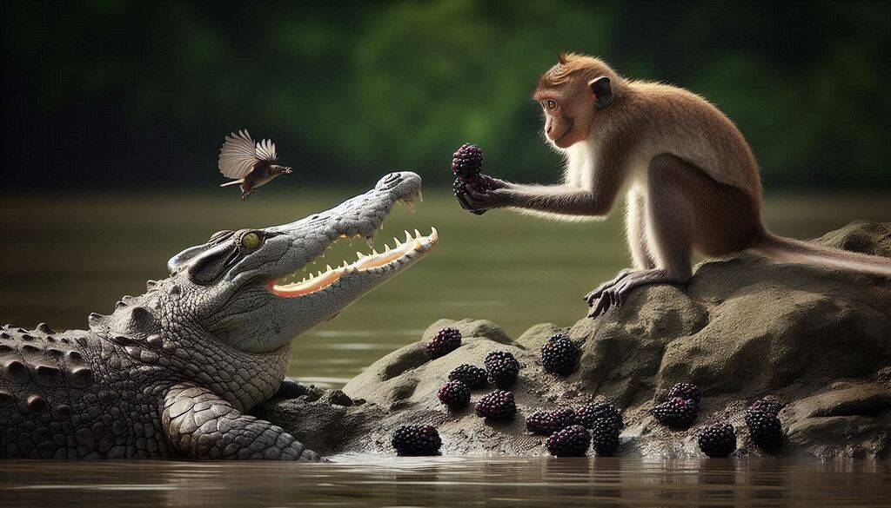
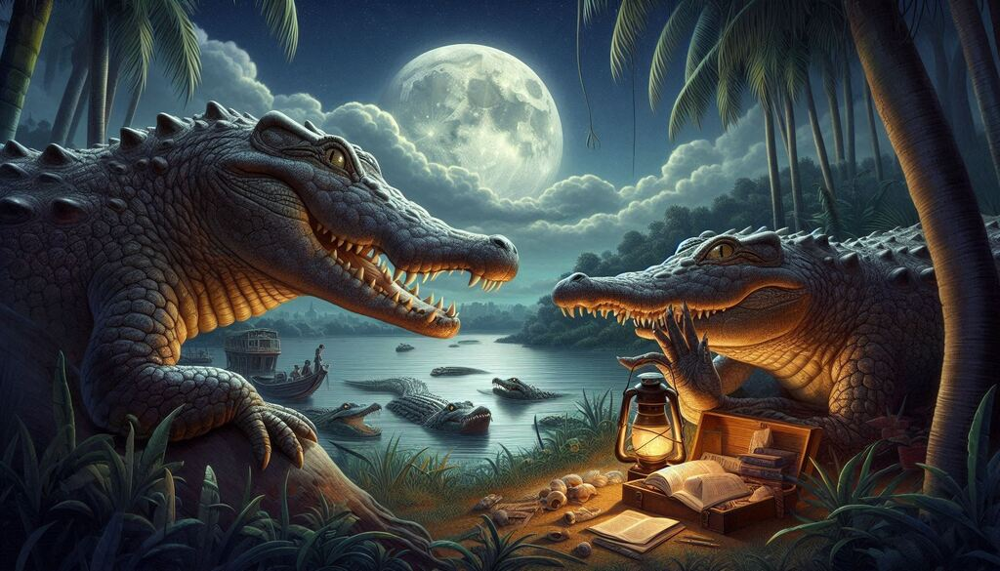
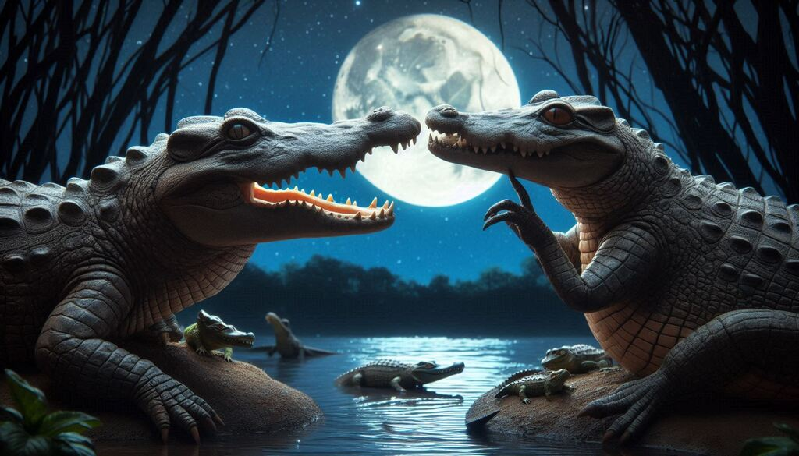
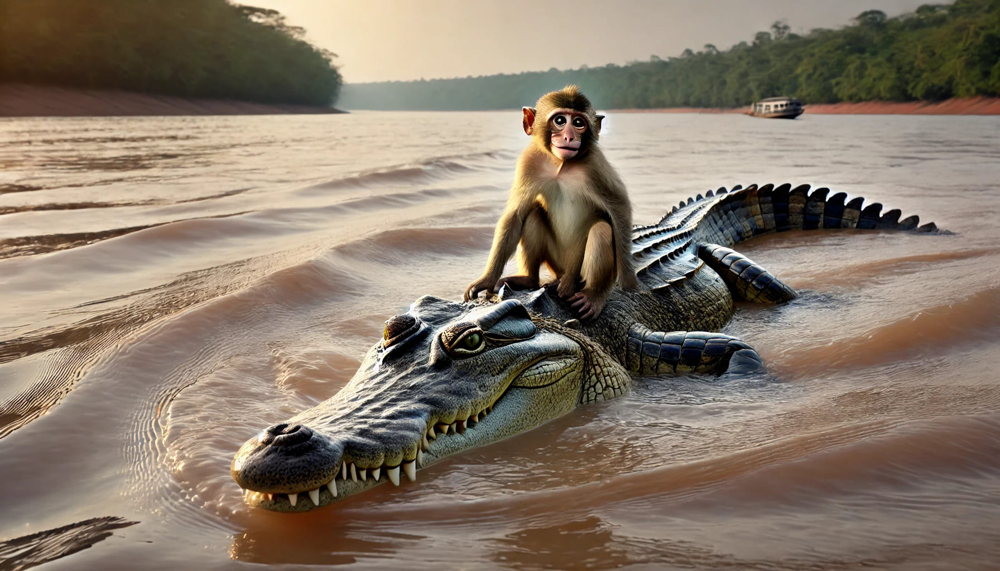
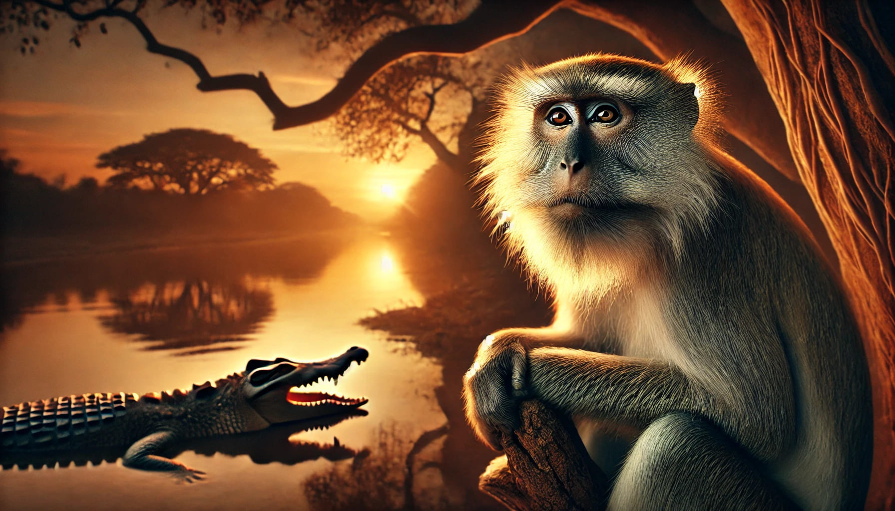

Panchatantra story by latest2all.com
The Monkey and the Crocodile –Panchatantra Story
The Hungry Crocodile
The morning sun had just begun to rise, casting golden rays over the jungle and painting the river in hues of orange and pink. The water rippled gently, reflecting the towering trees that lined its banks. The air was filled with the calls of birds greeting the new day, while a family of deer cautiously bent down to drink from the cool water.
Beneath the shimmering surface of the river, Kalu, the crocodile, lay motionless. His large, scaly body blended perfectly with the murky depths, his yellow eyes barely breaking the surface. He had been swimming for hours, searching for food, but luck had not been on his side. The fish had darted away too quickly, and the birds he had hoped to catch had flown off before he could get close.
His stomach rumbled, a deep growl echoing in the quiet water. It had been days since he had had a proper meal, and his strength was beginning to wane. He needed food—soon.
As Kalu drifted toward the riverbank, his sharp eyes caught sight of something unusual—a monkey sitting on a tree, happily munching on juicy fruits. His mouth watered as he watched the monkey take a bite of a dark purple jamun, the juices staining his fingers.

The First Encounter
High up in the jamun tree, Raju, the clever and playful monkey, was having the time of his life. He swung effortlessly from branch to branch, stuffing his mouth with the sweetest jamuns. As he ate, he hummed a happy tune, his brown tail curling around a sturdy branch for support.
Just as he was about to grab another fruit, he heard a deep sigh from below. Curious, he peered down.
There, lying near the water’s edge, was a crocodile staring up at him. But unlike the dangerous, hungry crocodiles he had seen before, this one did not look threatening. His eyes were filled with something else—sadness and exhaustion.
“What’s the matter, friend?” Raju called out, tilting his head. “You look like a fisherman who lost his net!”
Kalu let out a heavy breath. “I haven’t eaten in days,” he admitted. “The fish are too fast, and the birds are too clever. I fear I will grow too weak to hunt.”
Raju scratched his chin. “Well, that’s a problem, isn’t it?” He looked at the pile of jamuns next to him and had an idea.
“Tell me, have you ever tasted a jamun before?”
Kalu blinked. “A jamun?”
“Yes! They’re the sweetest fruits in the jungle,” Raju said proudly. “Here, try one!”
With that, he plucked a perfectly ripe jamun and tossed it toward Kalu. The crocodile opened his mouth, and the fruit landed on his rough, scaly tongue.
Kalu bit down. A burst of sweetness and tartness filled his mouth. He had never tasted anything like it! His tail thumped against the riverbank in delight.
“This is amazing!” Kalu exclaimed. “So much better than fish!”
Raju chuckled. “See? You don’t always have to hunt to enjoy a good meal.”
And from that moment on, something wonderful began—an unexpected friendship.
A Friendship Grows
Every morning, Kalu swam to the riverbank, and Raju tossed down the freshest jamuns. They would talk for hours, laughing and sharing stories about their worlds.
🌿 Raju’s World: The jungle canopy was his kingdom. He told Kalu how he could leap between trees, how he played with the birds, and how he could see the entire jungle from the highest branches.
🌊 Kalu’s World: The river was his domain. He spoke of hidden caves beneath the water, the silent movements of the fish, and how he could sense the vibrations of anything that entered the river.
One day, Kalu sighed, staring at the blue sky. “You’re lucky, Raju,” he said. “You get to see the world from above, while I only see what is beneath the water.”
Raju smiled. “Ah, but you are lucky too! You know secrets of the deep that I will never see. Every creature has its own world.”
The crocodile thought about this and nodded in agreement.
Their friendship deepened, and soon, Kalu was no longer just visiting for the jamuns—he came for the joy of Raju’s company.
The Contrast in Perspectives
As their bond grew, their differences became clear—but instead of dividing them, it made their friendship richer.
🦴 Kalu
was slow, cautious, and patient—he
believed in waiting for opportunities rather than chasing them.
🐒
Raju was quick, impulsive,
and full of energy—he
believed in taking risks and making things happen.
One afternoon, as they rested by the river, Kalu said, “Raju, don’t you ever feel afraid living up there in the trees? What if you fall?”
Raju grinned. “And don’t you feel afraid living in the river? What if something bigger comes along and eats you?”
Kalu blinked. He had never thought of that. “I suppose we both have dangers in our worlds,” he admitted.
“But that’s what makes life exciting!” Raju said, swinging from a low branch. “If we spent all our time being afraid, we’d never live at all!”
Kalu laughed for the first time in weeks.
Their friendship was something neither of them had expected, and yet, it was perfect.
But Trouble Was Coming…
As the days passed, Kalu’s wife began to notice his absence. She had heard whispers in the wind about her husband spending time with a monkey instead of hunting.
And soon, jealousy began to creep into her heart.
She would not let this continue.
She had a dangerous, wicked plan.

Introduction to Kalu’s Wife
Deep in the river, beneath the swaying reeds and smooth stones, lived Meena, Kalu’s wife. She was a beautiful yet cunning crocodile with emerald-green scales that shimmered under the water. Unlike Kalu, who was gentle and easygoing, Meena was sharp, ambitious, and filled with a hunger for power.
For days, she had noticed something odd—her husband was no longer bringing home fresh meat. Instead of hunting, he would disappear every morning and return looking strangely satisfied, his belly full but his jaws free of blood.
One afternoon, as Kalu lazily floated near their rocky riverbank home, Meena swam up to him, her golden eyes narrowing.
“Kalu,” she said sweetly, though there was a sharpness to her voice. “Where have you been going every day?”
Kalu hesitated. He had never kept secrets from his wife, but something in her tone made him uneasy.
“I have made a friend,” he admitted. “A monkey who lives in a jamun tree by the river. He shares his fruits with me.”
Meena’s eyes widened. “A monkey?” she repeated, disbelief creeping into her voice. “You, a mighty crocodile, have befriended a tree-dweller? And you eat…fruits?”
Kalu nodded, a small smile forming. “You wouldn’t believe how delicious jamuns are, Meena! They’re sweet, juicy, and fill the stomach without any need to hunt.”
Meena’s tail slapped the water in frustration. “You are a crocodile, Kalu! You were born to rule the river, not to beg for fruits from a silly monkey!”
She turned away, her mind already racing. This monkey was a problem. Kalu was growing soft, distracted, and worse—he was losing his instinct for hunting.
She would not allow it.
Her Desire for Power
That night, as the moon rose high over the river, Meena lay awake, her thoughts swirling like the currents beneath her.
She had heard tales from old crocodiles about how monkey hearts were magical—filled with life, energy, and an otherworldly sweetness that no creature had ever tasted.
“If Kalu eats the monkey’s heart,” she thought, “he will become stronger. He will return to his true nature, and we will rule this river as we should.”
She smiled to herself. Yes, this was the answer.
All she had to do was make Kalu bring the monkey to her.

Manipulation: A Wife’s Trickery
The next morning, Meena put on her best act. She lay on a flat rock near the riverbank, letting the sun warm her scales. When Kalu approached, she let out a weak, pitiful sigh.
Kalu’s brow furrowed. “What’s wrong, my love?”
Meena looked at him with tearful eyes. “I… I don’t know, Kalu. I feel so weak, so unwell…”
Kalu’s concern deepened. “What can I do? Tell me, and I’ll get it for you!”
She hesitated, then whispered, “The elders say that only the heart of a monkey can cure me.”
Kalu froze.
“What?” he whispered.
Meena sniffed, as if struggling to speak. “They say that a monkey’s heart is filled with warmth and energy—eating it will heal me, make me strong again.”
Kalu’s heart sank.
“But… Meena, the monkey is my friend.”
Meena turned away, her voice trembling. “If you truly love me, Kalu… you will do this for me. Or perhaps…” she let her voice quiver, “you don’t care for me anymore?”
Kalu felt trapped. He loved Meena. He also cared for Raju.
How could he choose?
But as he looked at Meena, her body lying limp on the rock, he felt his heart ache. She needs me, he thought. I have to do this…
With a heavy heart, Kalu agreed.
Kalu’s Dilemma: A Betrayal in Motion
The next day, Kalu swam to the jamun tree as usual, but this time, his heart was heavy.
Raju greeted him with his usual cheerful voice. “Ah, my friend Kalu! Here for your daily jamun feast?”
Kalu forced a smile. “Actually, Raju, today I have a surprise for you.”
Raju’s ears perked up. “A surprise?”
“Yes,” Kalu said. “You always share your world with me, telling me about the trees, the sky, and the birds. But I have never shown you my world—the river!”
Raju’s eyes widened. “You mean… I can visit your home?”
Kalu nodded. “Yes! Come with me, and I’ll take you across the river to meet my family.”
Raju clapped his hands excitedly. “That sounds amazing! I’ve always wanted to see what lies beyond the water!”
But just as he was about to jump onto Kalu’s back, he paused.
“Wait,” he said, scratching his chin. “There are no trees in the river, are there?”
Kalu swallowed hard. “No… but you won’t need them. You’ll be with me.”
Raju hesitated only for a moment before nodding. “Alright, Kalu! Let’s go on an adventure!”
And So, the Betrayal Begins…
As Raju climbed onto Kalu’s back, he could feel the cool, wet scales beneath his feet. He wrapped his tail around Kalu’s thick neck for balance, and together, they glided into the river.
The water was cool and calming, and for the first few moments, Raju was in awe. He saw fish swimming in shimmering schools, colorful corals at the bottom, and ripples spreading out into infinity.
“This is amazing, Kalu!” Raju said, his eyes filled with wonder.
Kalu forced himself to smile. But inside, his heart was breaking.
Because he knew that soon, his friend would never see this beauty again.
Coming Up Next: Chapter 3 – The Journey Across the River
Raju
is excited about his
adventure, unaware of the
danger that lies
ahead.
Kalu, torn
between his loyalty to
Meena and friendship with Raju,
faces his deepest moral
test.
And soon, the
truth will be revealed in the middle of the river… where there is
no escape.
Deception: Kalu’s Invitation to the River
The sun shone bright over the lush jungle, its golden rays reflecting off the gentle ripples of the wide river. Birds flitted from branch to branch, their melodious calls filling the air. High up in the jamun tree, Raju was in his usual spot, happily munching on the juiciest blackberries when he heard the familiar splash of water below.
“Kalu, my friend!” Raju called out cheerfully, waving his tiny hands.
The crocodile, however, was not his usual self. Kalu’s eyes looked heavy, as if carrying the weight of a storm inside. But he forced a smile. Today was the day. He had promised Meena he would bring the monkey back.
“Raju!” Kalu called up, his voice light yet strained. “I have something special for you today.”
Raju perked up, his curiosity piqued. “Oh? What is it?”
Kalu swam closer, his massive body gliding smoothly through the water. “You’ve always told me about the beauty of the jungle—the sky, the trees, the birds. But I have never shown you my world. Today, I want to take you across the river, to my home.”
Raju’s eyes sparkled with excitement. He had spent his entire life in the trees, swinging between branches, but he had never seen the other side of the river.
“You mean it?” Raju asked, leaning forward on the branch.
Kalu nodded. “Yes! You will meet my family. I want you to see the wonders of the deep river—the hidden caves, the dancing fish, and the smooth stones that shine like pearls.”
Raju clapped his hands. “That sounds amazing!”
For a brief moment, Kalu’s heart ached. This monkey truly trusted him. But it was too late to turn back now.
Raju leaped from the tree and landed gently on Kalu’s broad, scaly back. “Let’s go, my friend!”

The Monkey’s Excitement
The water was cool against Raju’s fur as Kalu carried him effortlessly across the river.
“This is wonderful, Kalu!” Raju exclaimed. “I never knew the river could be so calm and beautiful!”
Kalu forced a chuckle. “Yes… it is.”
As they glided across the deepening waters, Raju leaned over to peek into the clear blue depths. Schools of shimmering fish darted between the rocks, their scales flashing silver in the sunlight. Turtles rested on floating logs, blinking lazily. In the distance, he could see the opposite shore, lined with tall palm trees.
Everything felt magical.
“You never told me your home was so beautiful,” Raju said.
Kalu’s heart sank further. How could he betray such a friend?
He paddled forward in silence.
The Betrayal Revealed
Halfway across the river, where the water was deepest and the shore was far away, Kalu slowed his pace.
The monkey noticed. “Why are we slowing down?”
Kalu took a deep breath. He could no longer keep the secret.
“Raju…” Kalu said, his voice heavy. “There’s… something I must tell you.”
Raju tilted his head. “What is it, my friend?”
Kalu hesitated, but then he spoke the words that would change everything.
“My wife… she is sick. She believes that the only way to cure her is to eat the heart of a monkey.”
A cold chill ran through Raju’s small body. His hands gripped Kalu’s rough scales.
“What… what are you saying, Kalu?”
Kalu couldn’t meet his friend’s eyes. “I… I am taking you to my home so that my wife can eat your heart.”
For a moment, everything went silent—only the sound of the water lapping against Kalu’s back could be heard.
Then, Raju burst into laughter.
Kalu blinked in confusion.
“What’s so funny?”
Raju wiped a tear from his eye. “Oh, Kalu, my poor friend! Why didn’t you say so earlier? If you need my heart, we’ll have to go back.”
Kalu’s jaw dropped. “Back? Why?”
Raju grinned. “Because, silly! I don’t carry my heart inside me—I keep it safely hidden in the jamun tree!”
Kalu stared at him. “You… what?”
Raju nodded seriously, as if explaining a well-known fact. “Monkeys don’t keep their hearts inside them. That would be dangerous! We leave them in a safe place while we play.”
Kalu’s mind raced. He had never heard of such a thing. Could it be true?
Raju leaned forward. “Take me back to the tree, Kalu. I’ll get my heart for you.”
Kalu hesitated, but then turned around.
They began swimming back to the shore.
The Moment of Realization
As soon as they reached the shore, Raju leaped off Kalu’s back in a single swift motion, scrambling up the jamun tree before Kalu could react.
Kalu looked up. “Well? Where’s your heart?”
Raju laughed from above, his tail swaying.
“Oh, Kalu, you big fool! Who keeps their heart outside their body? You tried to trick me, but I tricked you first!”
Kalu’s eyes widened with shock.
“You… you tricked me?”
“Yes! And you deserve it!” Raju crossed his arms. “You betrayed our friendship, Kalu. How could you?”
Kalu felt sick with shame.
The Regret of the Crocodile
Kalu lowered his head, his heavy body sinking slightly into the water.
“I… I didn’t want to do it, Raju,” he whispered. “But Meena—she—she made me believe I had no choice.”
Raju shook his head. “There is always a choice, Kalu. A real friend would never put another in danger.”
Kalu sighed. “I… I understand now.”
For a moment, they stood in silence, the bond of their friendship forever changed.
Finally, Kalu turned away.
“I will leave now, Raju,” he said. “I don’t deserve your friendship.”
He swam slowly back into the deep waters, his heart heavier than ever.
Raju watched him go. He was sad, but he had learned a lesson too—not everyone who smiles at you is truly your friend.
Coming Up Next: Chapter 4 – The Great Escape and the Lesson Learned
✅ Raju
has outwitted Kalu, but will Kalu find redemption?
✅
Meena is waiting—what
will she do when Kalu returns empty-handed?
✅
A final lesson in trust,
betrayal, and wisdom awaits.
The Return to the Tree: A Clever Escape
As Kalu swam away, his body felt heavier than ever. He had failed his wife and betrayed his friend, all in the same moment.
Meanwhile, Raju sat high in his jamun tree, watching the crocodile drift away. His heart still raced from the close escape, but he knew he had learned a valuable lesson—trust is not something to be given freely; it must be earned.
Raju plucked a ripe jamun and tossed it into his mouth. The sweetness was comforting, yet his mind remained troubled. Could he ever trust Kalu again?
Kalu, on the other hand, felt empty. He had followed his wife’s demands, but at what cost? He had lost something far more valuable than a meal—he had lost a friend.
Meena’s Anger: A Crocodile’s Shame
When Kalu finally reached the riverbank, Meena was already waiting.
She rushed to him, her golden eyes glinting. “Where is the monkey?” she demanded.
Kalu lowered his head, his massive tail dragging against the mud. “I… I couldn’t do it, Meena.”
Meena’s expression darkened. “Couldn’t do it? After everything I told you? You had him! You had him in the middle of the river, where he had no escape!”
Kalu sighed. “He tricked me, Meena. And now I see the truth—he is not just food. He is my friend.”
Meena hissed in frustration. “A friend? You’re a fool, Kalu! A crocodile has no friends! We rule by strength, not by kindness!”
But Kalu had changed. He no longer believed in her cruel words.
“Maybe that’s why we live alone, Meena,” he said softly. “Because we push everyone away.”
For the first time, Meena had no response.
With a heavy heart, Kalu turned away from her, swimming slowly back into the depths of the river. He had lost a friend—but perhaps, in doing so, he had gained wisdom.
The Monkey’s Final Words of Wisdom
Back in the jamun tree, Raju felt a strange sadness.
Kalu had betrayed him, but he also knew that Kalu had been pressured by someone else. Would Kalu ever be the same again?
The next morning, Kalu returned to the riverbank, but he did not call for Raju like he used to. He simply lay in the water, staring at the sky, deep in thought.
Raju saw him but said nothing at first. Then, after a long moment, he finally spoke:
“Kalu, a true friend would never have put me in danger. You broke my trust.”
Kalu nodded solemnly. “I know, Raju. And I will regret it forever.”
Raju sighed. “Perhaps one day, we will be friends again. But not today.”
Kalu didn’t argue. He understood.
He had learned his lesson—trust, once broken, is not easily repaired.
With that, Raju turned away, climbing higher into his tree.
And Kalu slowly swam back into the river, disappearing into its silent depths.

Conclusion: The End with a Twist
The jungle remained the same—the river still flowed, the trees still swayed, and the animals still lived their lives.
But something had changed forever.
Raju had become wiser. He now knew whom to trust and whom to keep at a distance.
Kalu had learned a painful truth—friendship is worth more than fear.
As the sun dipped below the horizon, the jungle whispered its ancient songs, and the river swallowed its secrets once more.
And in the heart of the jamun tree, a clever monkey sat, watching the world with newfound wisdom.
Moral of the Story
✅ Trust is earned, not given
freely.
✅
A true friend never puts
another in danger.
✅
Wisdom and wit can save us
from betrayal.
Refer our website for more information
To go back to the list, click https://www.latest2all.com/all-stories.html
© 2025 https://www.latest2all.com Stay tuned for latest updates with us.
Dedicated to Bharat by latest2all.com